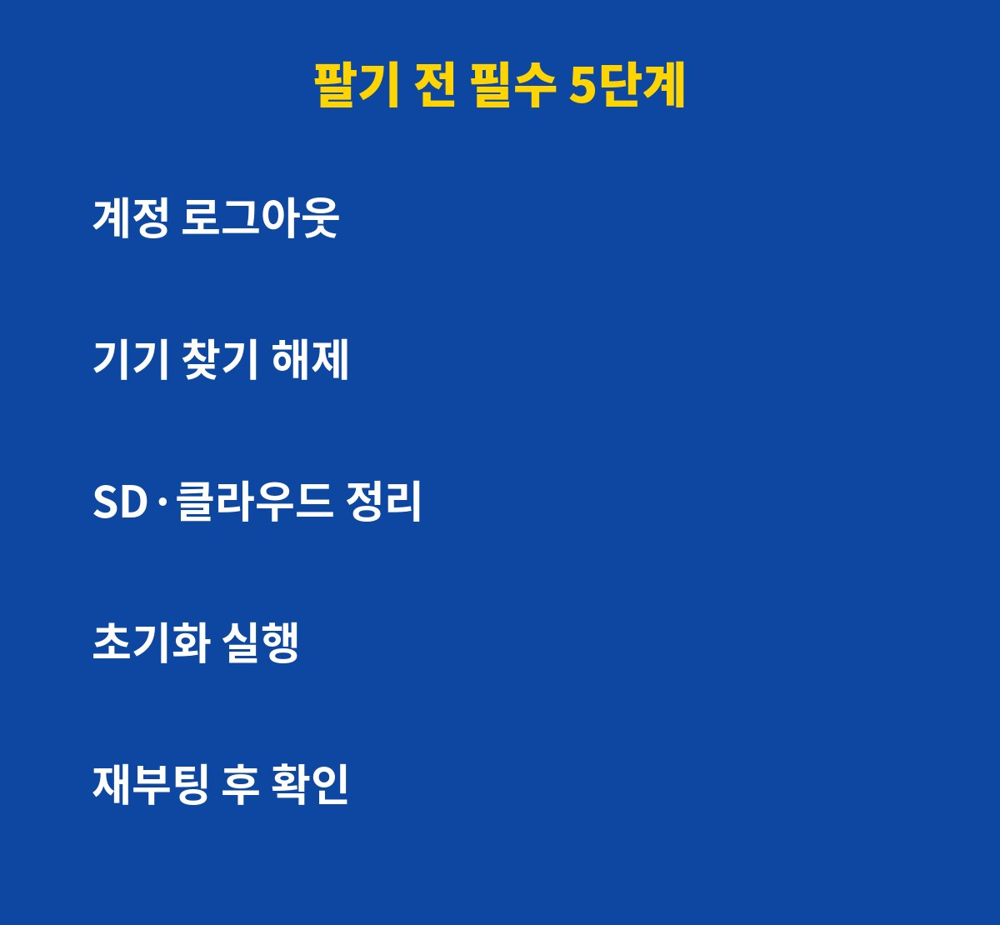
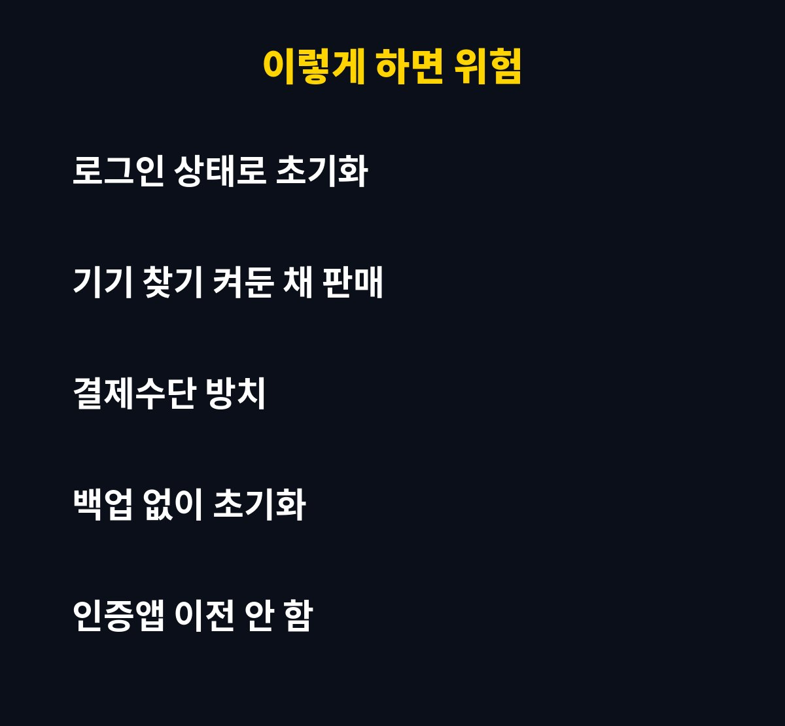

중고폰 초기화는 설정에서 '초기화' 버튼만 누르면 끝이 아니라, 그 전에 계정 로그아웃과 기기 찾기 해제까지 해야 안전해요. 중고폰을 팔 예정이거나 이미 판 분들이라면 꼭 확인해 보세요. 그런데 초기화만 믿고 넘기면 오히려 구매자도 나도 곤란해질 수 있어요. 이유는 아래에 있어요.
초기화만 하면 정말 끝일까요? 놓치기 쉬운 함정
많은 분들이 설정 메뉴에서 초기화만 누르고 폰을 넘겨요. 하지만 계정이 연결된 채로 초기화하면 '기기 찾기'나 활성화 잠금이 남아서 새 주인이 폰을 쓰지 못하는 일이 생길 수 있어요.
반대로 내 계정 정보가 제대로 정리되지 않으면 결제수단이나 인증 정보가 기기에 남아 있다고 착각하기 쉬워요. 그래서 순서가 중요해요.

팔기 전 꼭 해야 할 5단계, 순서가 중요하다고요?
아래 표 순서대로만 하면 실수를 크게 줄일 수 있어요.
| 순서 | 할 일 | 이유 |
|---|
| 1 | 중요 사진·연락처 백업 | 초기화하면 복구가 어려워요 |
| 2 | 구글·삼성·애플 계정 로그아웃 | 계정이 남으면 잠금이 걸릴 수 있어요 |
| 3 | 기기 찾기 기능 해제 | 새 주인이 기기를 등록하지 못해요 |
| 4 | 인증앱·간편결제 정리 | 2단계 인증과 결제 정보를 옮겨야 해요 |
| 5 | 공장 초기화 후 재부팅 | 초기 화면이 뜨는지 확인해요 |
인증앱과 간편결제를 안 옮기면 어떻게 될까요?
의외로 많이 놓치는 부분이에요. 인증앱을 새 폰으로 옮기기 전에 초기화하면 은행·SNS 계정에 로그인조차 못 하게 될 수 있어요. 반드시 새 폰에서 인증이 되는 걸 확인한 뒤에 초기화하세요.
간편결제 앱과 교통카드도 마찬가지예요. 기기에서 카드 등록을 해제하고, 사용하던 구독 서비스의 기기 목록에서도 이 폰을 삭제해 두면 안심이에요.

초기화 후 마지막으로 꼭 확인할 것은?
초기화가 끝나고 폰이 처음 설정 화면으로 돌아왔다면, 유심과 SD카드를 빼고 외관 상태를 사진으로 남겨 두세요. 거래 후 분쟁이 생겼을 때 도움이 돼요.
정리하면 백업, 로그아웃, 기기 찾기 해제, 인증·결제 정리, 초기화 순서만 지키면 돼요. 5분이면 충분하니 팔기 전에 꼭 체크해 보세요.
도움이 되셨다면 구독해 두시면 생활 밀착 IT 꿀팁을 가장 먼저 받아보실 수 있어요.
기사·공식 발표 기준이며 출시·가격 정보는 바뀔 수 있어요.